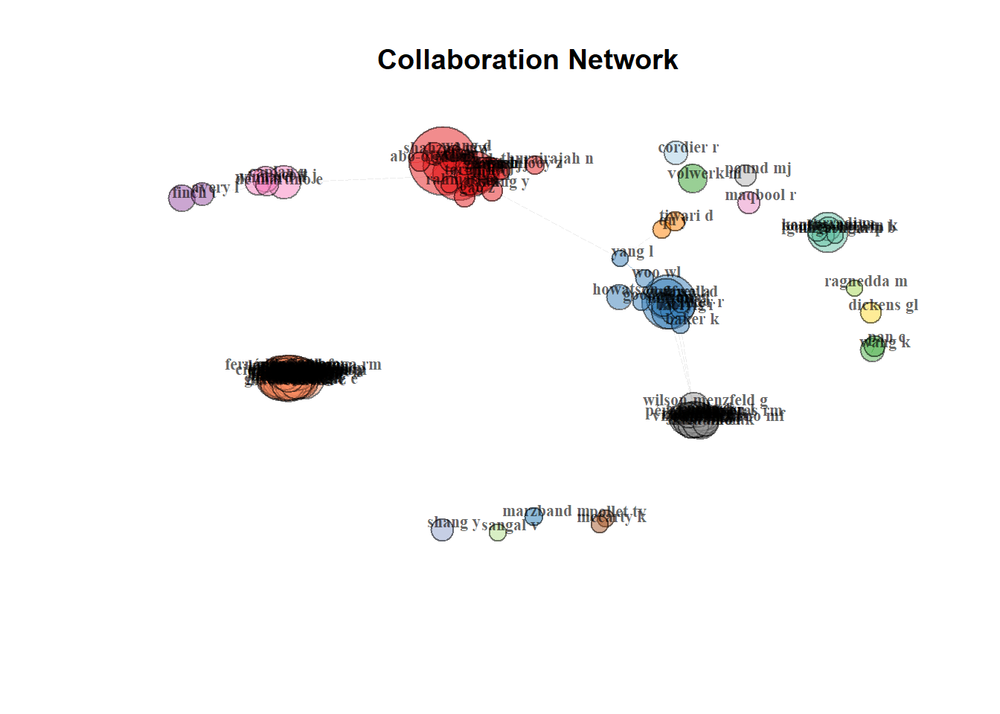
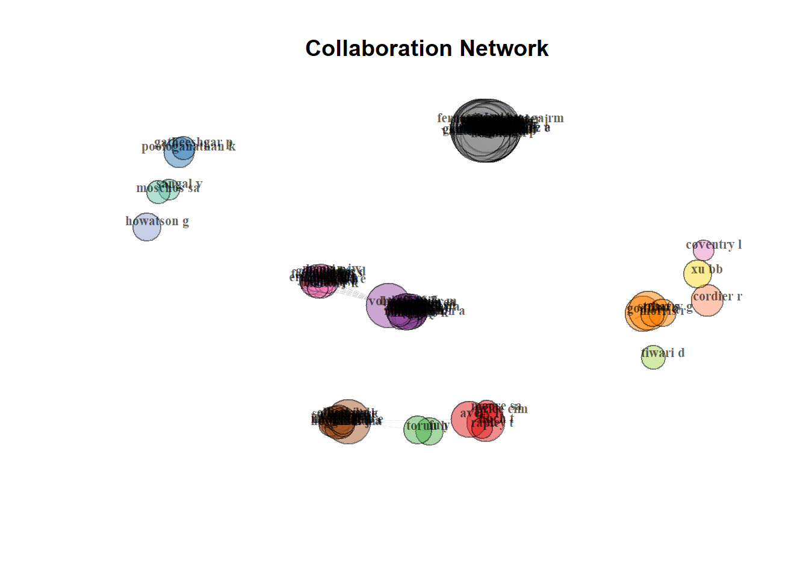

Author Collaboration for Corresponding Authors
Summary statistics : Size, Density, Transitivity, Diameter (length of shortest path between nodes in a network), Degree distribution, Degree centralization, Closeness centralization, Eigenvector centralization, Betweeness centralization, Average path length.
All Open Access
Summary Statistics
all_oa_corr <- all_oa_corr[!duplicated(all_oa_corr$DI),]
all_oa_corr$SR <- NULL
all_oa_corr$SR_FULL <-NULL ##Seemed to hold problem duplicates I couldn't get rid of without removing publictaions so I just dropped the columns for all_oa.Not useful anyway.
net_matrix_all_oa <- biblioNetwork(all_oa_corr, analysis = "collaboration", network = "authors", sep = ";")
net_stat_all_oa <- networkStat(net_matrix_all_oa)
summary(net_stat_all_oa, k=10)
Main statistics about the network
Size 2432
Density 0.004
Transitivity 0.88
Diameter 14
Degree Centralization 0.027
Average path length 6.11
Page Rank
net_all_oa_all<- networkStat(net_matrix_all_oa, stat = "all", type= "all") #Calculates many interesting things (including pagerank.)Warning in betweenness(net, v = V(net), directed = FALSE, weights = NULL, : 'nobigint' is deprecated since igraph 1.3
and will be removed in igraph 1.4net_all_oa_interesting <- as.data.frame(net_all_oa_all[["vertex"]])
all_oa_page_rank <- net_all_oa_interesting[with(net_all_oa_interesting,order(-vertexPageRank)),]
all_oa_page_rank <- all_oa_page_rank[1:25,]
all_oa_page_rank_top_25 <- all_oa_page_rank %>% select(c(vertexID, vertexPageRank))
all_oa_page_rank_top_25 vertexID vertexPageRank
XU BB XU BB 0.002388547
TORUN H TORUN H 0.002043633
HOWATSON G HOWATSON G 0.001657070
FINCH T FINCH T 0.001593615
WU Q WU Q 0.001587371
SCOTT J SCOTT J 0.001544451
MAQBOOL R MAQBOOL R 0.001518126
FU Y FU Y 0.001502761
POLLET TV POLLET TV 0.001447671
MARZBAND M MARZBAND M 0.001439754
GUO Z GUO Z 0.001433217
CORDIER R CORDIER R 0.001418108
BARRY G BARRY G 0.001403227
WILSON-MENZFELD G WILSON-MENZFELD G 0.001402974
THURAIRAJAH N THURAIRAJAH N 0.001379891
GODFREY A GODFREY A 0.001333202
STUART S STUART S 0.001321611
DICKENS GL DICKENS GL 0.001297331
SHANG Y SHANG Y 0.001286809
POOLOGANATHAN K POOLOGANATHAN K 0.001262781
GAO Z GAO Z 0.001253900
MCCARTY K MCCARTY K 0.001204470
WANG K WANG K 0.001196364
AVERY L AVERY L 0.001190158
FU YQ FU YQ 0.001179159Network Plot
(Need to figure out how to have large networks that aren’t just hairballs)
net_all_oa <- networkPlot(net_matrix_all_oa, n = 150, Title = "Collaboration Network", type = "fruchterman", size=T, remove.multiple=FALSE, labelsize=0.7,edgesize = .5)
Green
Summary Statistics
net_matrix_green <- biblioNetwork(green_corr, analysis = "collaboration", network = "authors", sep = ";")
net_stat_green <- networkStat(net_matrix_green)
summary(net_stat_green, k=10)
Main statistics about the network
Size 2398
Density 0.004
Transitivity 0.885
Diameter 14
Degree Centralization 0.027
Average path length 6.416
Page Rank
net_green_all<- networkStat(net_matrix_green, stat = "all", type= "all") #Calculates many interesting things (including pagerank.)Warning in betweenness(net, v = V(net), directed = FALSE, weights = NULL, : 'nobigint' is deprecated since igraph 1.3
and will be removed in igraph 1.4net_green_interesting <- as.data.frame(net_green_all[["vertex"]])
green_page_rank <- net_green_interesting[with(net_green_interesting,order(-vertexPageRank)),]
green_page_rank <- green_page_rank[1:25,]
green_page_rank_top_25 <- green_page_rank %>% select(c(vertexID, vertexPageRank))
green_page_rank_top_25 vertexID vertexPageRank
XU BB XU BB 0.002267625
TORUN H TORUN H 0.001975115
HOWATSON G HOWATSON G 0.001680174
WU Q WU Q 0.001627842
FINCH T FINCH T 0.001622863
SCOTT J SCOTT J 0.001579656
MARZBAND M MARZBAND M 0.001559428
MAQBOOL R MAQBOOL R 0.001538928
FU Y FU Y 0.001520925
POLLET TV POLLET TV 0.001467563
WILSON-MENZFELD G WILSON-MENZFELD G 0.001423749
BARRY G BARRY G 0.001411267
CORDIER R CORDIER R 0.001404416
GODFREY A GODFREY A 0.001349880
STUART S STUART S 0.001337827
DICKENS GL DICKENS GL 0.001326286
THURAIRAJAH N THURAIRAJAH N 0.001311004
SHANG Y SHANG Y 0.001305311
GUO Z GUO Z 0.001293999
GAO Z GAO Z 0.001272333
POOLOGANATHAN K POOLOGANATHAN K 0.001263434
MCCARTY K MCCARTY K 0.001221042
WANG K WANG K 0.001218286
AVERY L AVERY L 0.001207882
FU YQ FU YQ 0.001207161Network Plot
net_green <- networkPlot(net_matrix_green, n = 150, Title = "Collaboration Network", type = "fruchterman", size=T, remove.multiple=FALSE, labelsize=0.7,edgesize = 5)
Green Final
Summary Statistics
net_matrix_green_final <- biblioNetwork(green_final_corr, analysis = "collaboration", network = "authors", sep = ";")
net_stat_green_final <- networkStat(net_matrix_green_final)
summary(net_stat_green_final, k=10)
Main statistics about the network
Size 1207
Density 0.01
Transitivity 0.958
Diameter 13
Degree Centralization 0.047
Average path length 4.613
Page Rank
net_green_final_all<- networkStat(net_matrix_green_final, stat = "all", type= "all") #Calculates many interesting things (including pagerank.)Warning in betweenness(net, v = V(net), directed = FALSE, weights = NULL, : 'nobigint' is deprecated since igraph 1.3
and will be removed in igraph 1.4net_green_final_interesting <- as.data.frame(net_green_final_all[["vertex"]])
green_final_page_rank <- net_green_final_interesting[with(net_green_final_interesting,order(-vertexPageRank)),]
green_final_page_rank <- green_final_page_rank[1:25,]
green_final_page_rank_top_25 <- green_final_page_rank %>% select(c(vertexID, vertexPageRank))
green_final_page_rank_top_25 vertexID vertexPageRank
FINCH T FINCH T 0.002924918
HOWATSON G HOWATSON G 0.002655933
CORDIER R CORDIER R 0.002600564
SCOTT J SCOTT J 0.002494150
DICKENS GL DICKENS GL 0.002365268
BARRY G BARRY G 0.002318322
AVERY L AVERY L 0.002312757
POOLOGANATHAN K POOLOGANATHAN K 0.002309373
TORUN H TORUN H 0.002141325
GODFREY A GODFREY A 0.002118096
STUART S STUART S 0.002015907
FU Y FU Y 0.002005366
DEFEYTER MA DEFEYTER MA 0.001983977
TIWARI D TIWARI D 0.001918697
GONZÁLEZ S GONZÁLEZ S 0.001823282
WOO WL WOO WL 0.001768242
WILSON-MENZFELD G WILSON-MENZFELD G 0.001763044
COVENTRY L COVENTRY L 0.001746669
XU BB XU BB 0.001727298
KIERNAN MD KIERNAN MD 0.001693775
GATHEESHGAR P GATHEESHGAR P 0.001649280
PAN C PAN C 0.001621367
WANG K WANG K 0.001621367
CORRADI M CORRADI M 0.001585191
HETTINGA FJ HETTINGA FJ 0.001572971Network Plot
net_green_final <- networkPlot(net_matrix_green_final, n = 150, Title = "Collaboration Network", type = "fruchterman", size=T, remove.multiple=FALSE, labelsize=0.7,edgesize = 1)
Green Accepted
Summary Statistics
net_matrix_green_accepted <- biblioNetwork(green_accepted_corr, analysis = "collaboration", network = "authors", sep = ";")
net_stat_green_accepted <- networkStat(net_matrix_green_accepted)
summary(net_stat_green_accepted, k=10)
Main statistics about the network
Size 1452
Density 0.004
Transitivity 0.774
Diameter 15
Degree Centralization 0.03
Average path length 4.49
Page Rank
net_green_accepted_all<- networkStat(net_matrix_green_accepted, stat = "all", type= "all") #Calculates many interesting things (including pagerank.)Warning in betweenness(net, v = V(net), directed = FALSE, weights = NULL, : 'nobigint' is deprecated since igraph 1.3
and will be removed in igraph 1.4net_green_accepted_interesting <- as.data.frame(net_green_accepted_all[["vertex"]])
green_accepted_page_rank <- net_green_accepted_interesting[with(net_green_accepted_interesting,order(-vertexPageRank)),]
green_accepted_page_rank <- green_accepted_page_rank[1:25,]
green_accepted_page_rank_top_25 <- green_accepted_page_rank %>% select(c(vertexID, vertexPageRank))
green_accepted_page_rank_top_25 vertexID vertexPageRank
XU BB XU BB 0.003023673
WU Q WU Q 0.002545427
TORUN H TORUN H 0.002428556
MAQBOOL R MAQBOOL R 0.002307804
POLLET TV POLLET TV 0.002304099
THURAIRAJAH N THURAIRAJAH N 0.002273221
GUO Z GUO Z 0.002252070
SHANG Y SHANG Y 0.002231116
FU YQ FU YQ 0.002174649
MARZBAND M MARZBAND M 0.002147596
WANG Y WANG Y 0.001975717
GAO Z GAO Z 0.001901558
POUND MJ POUND MJ 0.001896643
VU MC VU MC 0.001883560
STUART S STUART S 0.001811813
YANG L YANG L 0.001754185
NEAVE N NEAVE N 0.001744772
POOLOGANATHAN K POOLOGANATHAN K 0.001705948
LIM M LIM M 0.001693244
ADENIYI O ADENIYI O 0.001624033
ASLAM N ASLAM N 0.001619280
AZIMOV U AZIMOV U 0.001610623
UNSWORTH J UNSWORTH J 0.001591190
DEARY ME DEARY ME 0.001588631
YUAN J YUAN J 0.001584682Network Plot
net_green_accepted <- networkPlot(net_matrix_green_accepted, n = 150, Title = "Collaboration Network", type = "fruchterman", size=T, remove.multiple=FALSE, labelsize=0.7,edgesize = 5)
Not Green
Summary Statistics
net_matrix_not_green<- biblioNetwork(not_green_corr, analysis = "collaboration", network = "authors", sep = ";")
net_stat_not_green <- networkStat(net_matrix_not_green)
summary(net_stat_not_green, k=10)
Main statistics about the network
Size 649
Density 0.009
Transitivity 0.621
Diameter 9
Degree Centralization 0.078
Average path length 3.722
Page Rank
net_not_green_all<- networkStat(net_matrix_not_green, stat = "all", type= "all") #Calculates many interesting things (including pagerank.)Warning in betweenness(net, v = V(net), directed = FALSE, weights = NULL, : 'nobigint' is deprecated since igraph 1.3
and will be removed in igraph 1.4net_not_green_interesting <- as.data.frame(net_not_green_all[["vertex"]])
not_green_page_rank <- net_not_green_interesting[with(net_not_green_interesting,order(-vertexPageRank)),]
not_green_page_rank <- not_green_page_rank[1:25,]
not_green_page_rank_top_25 <- not_green_page_rank %>% select(c(vertexID, vertexPageRank))
not_green_page_rank_top_25 vertexID vertexPageRank
WU Q WU Q 0.006783042
JAHANKHANI H JAHANKHANI H 0.005922758
XU BB XU BB 0.005831571
POOLOGANATHAN K POOLOGANATHAN K 0.005295464
FU YQ FU YQ 0.005258701
GUO Z GUO Z 0.005250989
GATHEESHGAR P GATHEESHGAR P 0.004711329
MARZBAND M MARZBAND M 0.004274064
YUAN J YUAN J 0.004045065
ALGADI H ALGADI H 0.003792800
ZHOU X ZHOU X 0.003787891
XING L XING L 0.003688906
LI H LI H 0.003634541
TORUN H TORUN H 0.003548481
ALLEN G ALLEN G 0.003533428
CORRADI M CORRADI M 0.003357814
LIU B LIU B 0.003253078
ZHANG Y ZHANG Y 0.003220641
GODFREY A GODFREY A 0.003049035
STUART S STUART S 0.003049035
GHASSEMLOOY Z GHASSEMLOOY Z 0.002911522
MAQBOOL R MAQBOOL R 0.002862371
DAS J DAS J 0.002809138
SHAMS SMR SHAMS SMR 0.002762666
ELLIOTT IC ELLIOTT IC 0.002729203Network Plot
net_not_green <- networkPlot(net_matrix_not_green, n = 150, Title = "Collaboration Network", type = "fruchterman", size=T, remove.multiple=FALSE, labelsize=.7,edgesize = 5)
Alternate Network Visualizations
all_oa_graph <- igraph::graph.adjacency(net_matrix_all_oa
, mode="undirected"
, weighted=TRUE) clusterlouvain <- cluster_louvain(all_oa_graph)
clusterlouvainIGRAPH clustering multi level, groups: 258, mod: 0.94
+ groups:
$`1`
[1] "STUART S" "GODFREY A" "BARRY G" "MORRIS R" "MASON R" "WALKER R"
[7] "BAKER K" "POWELL D" "DAS J" "YOUNG F" "MANCINI M" "NAISBY J"
[13] "PEARSON LT" "VITORIO R" "CELIK Y" "DISMORE L" "GRAHAM L" "HAND A"
[19] "LI G" "MCDONALD C" "MONTAGUE K" "OMAN P" "WALL C" "ZHANG Y"
[25] "AHMAD B" "AMJAD A" "ARAUJO-SOARES V" "ASLAN MF" "BAKER A" "BALAAM M"
[31] "BEHM DG" "BELMONT M" "BUTTERFIELD A" "BYERLEY J" "CAMPBELL KR" "CARVALHO L"
[37] "CLARKSON CE" "CLEAR AK" "COULBY G" "COVASSIN T" "DEVER A" "DISMORE LL"
[43] "EDWARDS C" "GHATTAS H" "GRAY WK" "GUAN Y" "GUERREIRO T" "HARDING C"
[49] "HARGREAVES E" "JACKSON D" "JONES O" "KANDALA NB" "KERNOHAN A" "KING LA"
+ ... omitted several groups/verticesplot(all_oa_graph, vertex.color=rainbow(7, alpha=0.6)[clusterlouvain$membership])
Link for Text files including First 10 (top_ten_cluster.txt) and a full text file for the cluster louvain (cluster_louvain.txt)
Hive Plots
Taking igraphs from the bilbionetwork object.
hive_green <- net_green[["graph"]]
green_edge <- as_edgelist(hive_green)
green_edge <- cbind(green_edge, oa_status = "Green")
green_edge <- as.data.frame(green_edge)
names(green_edge)[names(green_edge) == "V1"] <- "From"
names(green_edge)[names(green_edge) == "V2"] <- "To"
hive_green_accpeted <- net_green_accepted[["graph"]]
green_accepted_edge <- as_edgelist(hive_green_accpeted)
green_accepted_edge <- cbind(green_accepted_edge, oa_status = "Green Accepted")
green_accepted_edge <- as.data.frame(green_accepted_edge)
names(green_accepted_edge)[names(green_accepted_edge) == "V1"] <- "From"
names(green_accepted_edge)[names(green_accepted_edge) == "V2"] <- "To"
hive_green_final <- net_green_final[["graph"]]
green_final_edge <- as_edgelist(hive_green_final)
green_final_edge <- cbind(green_final_edge, oa_status = "Green Final")
green_final_edge <- as.data.frame(green_final_edge)
names(green_final_edge)[names(green_final_edge) == "V1"] <- "From"
names(green_final_edge)[names(green_final_edge) == "V2"] <- "To"
hive_not_green <- net_not_green[["graph"]]
not_green_edge <- as_edgelist(hive_not_green)
not_green_edge <- cbind(not_green_edge, oa_status = "Not Green")
not_green_edge <- as.data.frame(not_green_edge)
names(not_green_edge)[names(not_green_edge) == "V1"] <- "From"
names(not_green_edge)[names(not_green_edge) == "V2"] <- "To"
full_hive <- rbind(green_edge, green_accepted_edge, green_final_edge, not_green_edge)The Hive plot below shows the collaborations between authors in terms of collaboration, differentiated by their open access.
The large main hive plot lines are where the nodes (authors) are situated based on three categories. Having few collaborations (less than 5) having medium collaborations (between 5 and 15) and having many collaborations (more than 15) The curved lines signify and edge (collaboration/link between authors).
graph <- graph_from_data_frame(full_hive)
V(graph)$Collaboration <- degree(graph, mode = 'in')
V(graph)$Collaboration <- factor(ifelse(V(graph)$Collaboration < 5, 'few',
ifelse(V(graph)$Collaboration >= 15, 'many', 'medium')),
levels = c('few', 'medium', 'many'))
# Create the hive plot
ggraph(graph, 'hive', axis = Collaboration, sort.by = 'degree') +
geom_edge_hive(aes(colour = oa_status)) +
scale_color_manual(values = c("#16e01a", "#69d9db", "#9f4fe0","#06000a"), name = "Open Access Status") +
geom_axis_hive(aes(colour = Collaboration), size = 4, label = FALSE) +
scale_color_manual(values = c("#06000a", "#4149d9", "#fce803"),
labels = c('few', 'medium', 'many')) +
coord_fixed()Scale for colour is already present.
Adding another scale for colour, which will replace the existing scale.Warning: Using the `size` aesthetic in this geom was deprecated in ggplot2 3.4.0.
ℹ Please use `linewidth` in the `default_aes` field and elsewhere instead.
Faceted Hive Plots
Hive plots separated by open access for clearer visualization.
ggraph(graph, 'hive', axis = Collaboration, sort.by = 'degree') +
geom_edge_hive(aes(colour = oa_status)) +
geom_axis_hive(aes(colour = Collaboration), size = 3, label = FALSE) +
scale_color_manual(values = c("#06000a", "#4149d9", "#fce803"),
labels = c('few', 'medium', 'many')) +
coord_fixed() +
facet_edges(~oa_status)